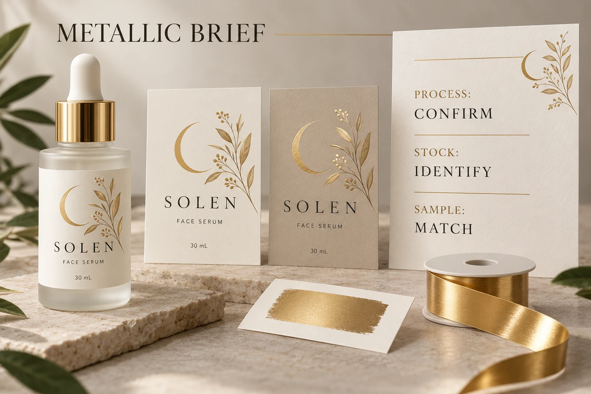

Ask what the supplier means by metallic
Request the actual process description. Is the quotation for a transfer finish, a metallic ink, printing over a metallized stock, or another arrangement? If transfer finishing is proposed, ask which process is intended rather than treating every foil reference as the same operation.
KURZ's metallic hot-stamping overview describes different finish families and products for particular surfaces. It illustrates why a process and substrate need identifying together. It does not establish that every foil product suits your cosmetic label or that YT Labels offers every process shown.
Keep a reference sample ID beside the description. A photograph may help locate the sample, but the printer should be able to identify which material and finish the photograph represents. “Similar to the luxury bottle we discussed” leaves too much interpretation in a production request.
Do not rank every ink below every foil
It is tempting to turn the choice into a simple ladder: ordinary ink, metallic ink, then premium foil. That shortcut can hide the actual visual objective.
ECKART describes pigment-based metallic printing inks, including high-brilliance products intended for conventional offset printing. Those specific products do not establish the result of a different ink on cosmetic film. They do show why “metallic ink always looks dull” is an unreliable universal claim.
Likewise, not every brief needs the strongest reflection. A restrained metallic tone may fit a quiet design better than a conspicuous accent. Ask what the brand wants the feature to do: highlight a symbol, distinguish a variant, connect with an outer carton, or cover a larger background area.
The correct comparison is between defined proposals that satisfy that objective, not between process names carrying assumed levels of prestige.
Put the proposed finish on the intended construction
Identify the label stock and relevant protective finish, then ask for a sample that is meaningfully related to the proposed job. A metallic effect on coated paper is not automatic evidence for the same appearance on clear film over a colored bottle.
Review the sample on the intended container where appearance depends on the pack underneath. Keep the bottle, artwork and viewing conditions consistent when making a direct comparison, and record unavoidable differences between samples.
If one option uses a different construction or decorative area, make that visible in the evaluation. Otherwise the team may attribute the difference to foil versus ink when several variables changed at once.
For the separate question of matching critical brand colors, use the cosmetic label color proofing guide. A metallic-process decision should not quietly become a promise that a screen reference can control every physical color.
Give fine detail and large areas different attention
Mark the artwork elements that actually matter: fine lettering, thin lines, small reversed spaces, a solid accent or a broad decorative field. Ask the printer to review those features against the proposed process and finish.
Do not approve a small motif solely because a large sample square looks attractive. Conversely, a successful small mark does not explain how a much larger area will appear. The relevant production sample should make the difficult feature visible.
There is no universal minimum line width or decorative coverage rule in this guide. Obtain project-specific requirements from the production party and have the designer work against the agreed specification. A suggested artwork adjustment should be reviewed by the brand before it becomes the final design.

Compare quotation scope after the visual target is clear
Use a short brief to bring design, sampling and quotation into the same discussion:
| Decision field | What to identify |
|---|---|
| Visual job | The feature and appearance the brand wants the metallic effect to provide |
| Process | Supplier's named production route and any alternatives under consideration |
| Construction | Face stock, relevant coating or laminate, and container reference |
| Artwork | Decorative area and the fine or large features requiring review |
| Reference | Sample ID, viewing conditions and known differences from the proposed job |
| Commercial scope | Quantity by version, sampling, setup or tooling inclusions, finishing and delivery format |
| Release | Named approver, outstanding question and agreed next sample or correction |
This table does not imply either process always has lower setup cost, a shorter lead time or a particular minimum order. Ask for actual terms against the same brief.
Let a simpler option win when it meets the brief
Consider two hypothetical projects. One brand needs an unmistakable metallic highlight and has an identified transfer-finish sample that demonstrates the desired artwork on a relevant construction. It has a reason to investigate that route and its quotation conditions.
Another brand mainly needs a warm accent that remains readable beside its product name. A suitable printed color, metallic ink proposal or different decoration could meet the objective with fewer changes to the existing job. The choice should follow the accepted sample and actual commercial scope.
For general style coordination across a fragrance range, see the candle label finishes guide. Here the purchasing decision is narrower: which identified production effect the cosmetic label quotation actually includes.
Send an effect reference with the artwork
For custom cosmetic labels, provide the bottle, label dimensions, artwork, quantity per design and the decorative areas you want reviewed. Include the physical-reference details and ask which relevant processes are currently available for the proposed construction.
Use the inquiry form to prepare your message, then send artwork and reference images by email or WhatsApp. The form does not upload those attachments. Before release, confirm that the acknowledged process and sample are the ones the brand actually approved.